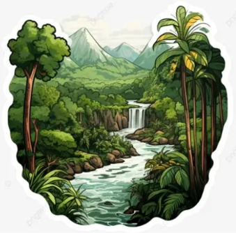

Macas Aventura nació con la idea de promover a Macas, Morona Santiago, como un destino turístico lleno de naturaleza, cultura y aventura. La agencia busca conectar a los visitantes con los paisajes amazónicos, las tradiciones locales y las experiencias únicas que ofrece la región.
Ofrecer experiencias turísticas seguras y memorables en Macas y sus alrededores, promoviendo la naturaleza, cultura y gastronomía de Morona Santiago con un servicio responsable y de calidad.
Ser una agencia turística reconocida por promover a Macas como uno de los destinos amazónicos más atractivos del Ecuador, destacándose por sus experiencias, atención al visitante y compromiso con el turismo sostenible.
Responsabilidad, calidad, honestidad, respeto, compromiso e innovación son los principales valores que representan a nuestra empresa.
Nuestro equipo está formado por personal encargado de la administración.